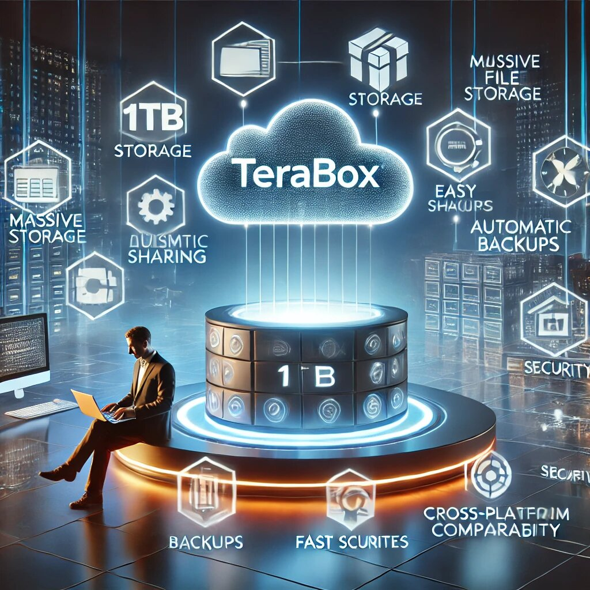

In today’s fast-paced digital age, managing files, photos, videos, and documents can feel like trying to herd cats—chaotic, time-consuming, and downright frustrating. Enter Terabox, your new best friend in the world of cloud storage. If you’ve ever found yourself drowning in a sea of files or struggling to free up space on your devices, Terabox is here to rescue you. In this article, we’ll explore how Terabox can make your life easier, one gigabyte at a time. And don’t worry—we’ll keep it simple, straightforward, and even sprinkle in a little humor to keep things light.
Let’s face it: storage space is like chocolate—you can never have enough. Terabox understands this and offers a whopping 1 TB (1,000 GB) of free cloud storage. Yes, you read that right—FREE. Whether you’re a student with a million assignments, a photographer with thousands of high-res images, or just someone who hoards memes (no judgment here), Terabox has got your back.
With 1 TB, you can store approximately:
And if you need even more space, Terabox offers affordable premium plans. It’s like upgrading from a studio apartment to a penthouse without the hefty price tag.
Remember the days when you had to carry around a USB drive or email files to yourself? Those days are over, my friend. Terabox lets you access your files from any device with an internet connection. Whether you’re on your laptop, smartphone, or tablet, your files are just a few clicks away.
Stuck in a boring meeting? Pull up that presentation you saved on Terabox. On vacation and need to show off your travel photos? Open the Terabox app and impress your friends. It’s like having a magic portal to all your important stuff, minus the wizardry.
Sharing files with Terabox is as easy as passing the popcorn at a movie night. With just a few taps, you can generate a Terabox direct download link and send it to anyone—no need to worry about file size limits or compatibility issues. Whether it’s a 4K video of your cat doing backflips or a 100-page PDF for work, Terabox ensures your files reach their destination quickly and securely.
Plus, you can set permissions to control who can view, download, or edit your files. It’s like having a bouncer for your data, ensuring only the right people get in.
We’ve all been there—your phone crashes, your laptop dies, or you accidentally delete that important file you’ve been working on for hours. Cue the panic. But with Terabox’s automatic backup feature, you can breathe easy.
Terabox can automatically back up your photos, videos, and documents to the cloud, so you never have to worry about losing them. It’s like having a personal assistant who’s always on top of things, except it doesn’t need coffee breaks.
If your digital life is a mess, Terabox is the Marie Kondo of cloud storage. The platform allows you to create folders, subfolders, and even use tags to keep everything organized. Need to find that one specific file from six months ago? Terabox’s powerful search function will locate it in seconds.
Think of it as decluttering your digital closet—except you don’t have to decide what “sparks joy.” Everything stays, and it’s all neatly organized.
Running out of storage on your phone or computer is the modern-day equivalent of running out of gas on the highway. Terabox solves this problem by letting you store your files in the cloud, freeing up precious space on your devices.
You can keep your phone’s gallery clutter-free by uploading photos and videos to Terabox. And if you ever need them, they’re just a tap away. It’s like having an extra closet for your digital life—without the awkward family heirlooms taking up space.
Nobody likes waiting for files to upload or download. It’s like watching paint dry—except less exciting. Terabox ensures speedy transfers, so you can get back to what really matters (like binge-watching your favorite show).
Whether you’re uploading a batch of vacation photos or downloading a large work file, Terabox’s optimized servers make the process quick and painless. It’s the Usain Bolt of cloud storage.
Terabox plays nice with everyone. Whether you’re using Windows, macOS, Android, or iOS, Terabox has apps and web interfaces that work seamlessly across all platforms. Switching devices? No problem. Terabox ensures your files are always within reach, no matter what gadget you’re using.
It’s like having a universal remote for your files—except it actually works the first time you try it.
When it comes to your files, security is no joke. Terabox takes this seriously by using advanced encryption to protect your data. Your files are stored securely in the cloud, and only you (or those you share them with) can access them.
Think of it as a digital fortress for your files, complete with firewalls, encryption, and all the techy stuff that keeps hackers at bay. Sleep easy knowing your data is safe and sound.
By using Terabox, you’re not just making your life easier—you’re also doing your part for the planet. Storing files in the cloud reduces the need for physical storage devices like external hard drives, which eventually end up in landfills. Plus, you’ll never have to worry about losing or damaging a USB drive again. It’s a win-win for you and Mother Earth.
Let’s be honest: some tech tools feel like they were designed by aliens. Terabox, on the other hand, is refreshingly simple and intuitive. Even if you’re not a tech wizard, you’ll have no trouble navigating the platform. The clean design and straightforward features make it easy for anyone to use.
It’s like the difference between assembling IKEA furniture with and without the instructions—Terabox is the instructions.
While Terabox offers an impressive 1 TB of free storage, their premium plans are worth considering if you need even more space or additional features. The best part? They’re incredibly affordable. For the price of a couple of cups of coffee each month, you can unlock extra storage and premium perks.
It’s like getting a luxury car for the price of a bicycle—except it’s cloud storage, and you don’t have to worry about parking.
If you’re working on a team project, Terabox makes collaboration a breeze. You can share folders with colleagues, classmates, or friends, allowing everyone to access and edit files in real time. No more endless email chains or confusing version histories. Terabox keeps everyone on the same page—literally.
It’s like having a virtual conference room where everyone can contribute without stepping on each other’s toes.
Terabox is constantly evolving to meet user needs. The team behind the platform regularly releases updates and new features to enhance your experience. Whether it’s improved security, faster speeds, or new tools for organizing files, Terabox is always getting better.
It’s like having a cloud storage service that grows with you—minus the awkward teenage phase.
If you’re a content creator, Terabox is your new best friend. From storing raw footage to backing up edited videos, Terabox ensures your creative work is safe and accessible. You can even share large files with clients or collaborators without worrying about email attachment limits.
It’s like having a personal assistant who handles all the boring stuff, so you can focus on creating.
In a world where time is precious and digital clutter is inevitable, Terabox stands out as a game-changer. With its massive storage space, easy accessibility, and user-friendly features, Terabox simplifies your digital life in ways you never thought possible. Whether you’re a student, professional, or just someone who loves staying organized, Terabox has something for everyone.
So why wait? Sign up for Terabox today and experience the joy of a clutter-free, stress-free digital life. After all, life’s too short to spend it searching for lost files or deleting photos to make room for new ones. Let Terabox handle the heavy lifting, so you can focus on what really matters—like finally watching that show everyone’s been talking about.